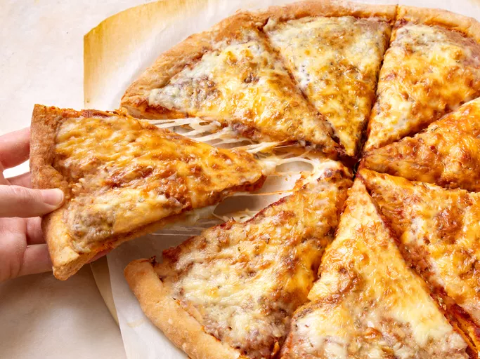

Home
A Delicious Pepperoni Pizza

Description
This delicious and exquisite pizza recipe only requires 5 ingredients to create!
The only techniques needed are creating the dough, rolling it, and then spreading the sauce and cheese as well as tossing in the toppings!
Ingredients
- 1 cup of warm water
- 1 package of active dry yeast
- 1 teaspoon of white sugar
- 2 1/2 cups of bread flour
- 2 tablespoons of olive oil
- 1 teaspoon of salt
Steps
- Gather all ingredients. Preheat oven to 450 degrees F (230 degrees C), and lightly grease a pizza pan.
- Place warm water in a bowl; add yeast and sugar. Mix and let stand until creamy, about 10 minutes.
- Add flour, oil, and salt to the yeast mixture; beat until smooth. You can do this by hand or use a stand mixer fitted with a dough hook to make it easier.
- Let rest for 5 minutes.
- Turn dough out onto a lightly floured surface and pat or roll into a 12-inch circle.
- Transfer to the prepared pizza pan.
- Spread crust with sauce and toppings of your choice.
- Bake in the preheated oven until golden brown, 15 to 20 minutes. Remove from the oven and let cool for 5 minutes before serving.